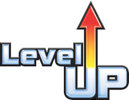

- 


O processo desse projeto
Para o nosso projeto final na matéria Grandes Desafios da Engenharia nós tivemos que elaborar um mini artigo acadêmico acerca de tema relacionado à Ciência, Tecnologia e Sociedade. Sua estrutura e formatação deveriam seguir um código para a elaboração de artigos chamado CTS. Durante um período tivemos diversas aulas, como também cases, que são apresentações a respeito de temas predefinidos que tinham a ver com os que precisávamos para a elaboração do trabalho acadêmico.
Minha escolha a respeito do temas foi sobre os videogames e suas influencias no meio acadêmico e social, tendo em vista que na contemporânea sociedade os mesmos se encontram no dia a dia de quase todos os jovens como adultos, entretanto eles não afetam nossas vidas somente de forma positiva, como também, afetam de forma negativa, de tal forma que me inspirei neste polemico tema para dissertar e estudar, virando então o meu objetivo de estudo, “Video Games e suas influencias no meio acadêmico e social”